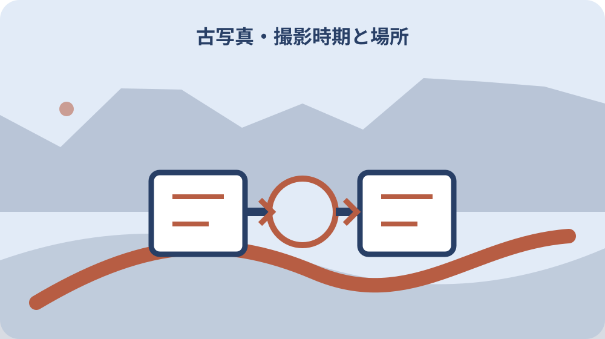
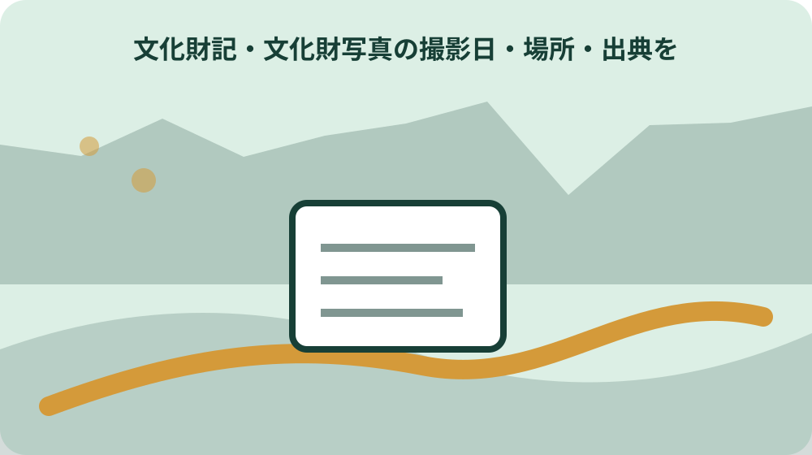

先に結論を確認する
この記事の答え：一枚ごとに原本番号を付け、表裏、収納場所、撮影時期、撮影場所、行事・建物名、提供者、聞取日、各項目の根拠を別欄にします。不明・推定・確認済みを区別し、画像の複製・送信・公開は来歴整理とは別に権利を確認します。
森町で最初に照合する条件：森町公式写真を照合例として使い、家の写真の行事名、人物名、年代を外見だけで断定しない。
一枚を急いで公開せず「分からない」を残す
押入れのアルバムから祭礼や古い建物の写真が出てきたとき、最初に決めるのは題名ではありません。誰が、いつ、どこで撮ったか分からない状態そのものを失わず記録します。屋台、装束、社殿や古民家が写っていても、見覚えだけで森の祭り、特定の町内、特定の建物や年代と決めると、後の証言までその思い込みに引かれてしまいます。
台帳の最初の行には、発見日、発見場所、アルバム名、ページ、写真の向き、裏書の有無を書きます。内容説明は「屋台らしい二輪車と人の列」「山を背にした社殿」のように、画像から直接読める範囲に留めます。人物名や行事名は候補欄に置き、確定欄とは分けます。
分からない欄を空白にすると、未調査なのか記録漏れなのか次の人には判別できません。「未確認」「写真裏に記載なし」「親族Aへ確認予定」のように、現在地と次の動きを書きます。結論を急がないことが、古い写真を後から検証できる地域資料へ変える第一歩です。
この記事の目的は、森町の祭礼・建物古写真をすぐSNSへ載せる方法ではありません。原本を傷めず、行事名、建物名、撮影地点、年代の由来を一項目ずつ確かめ、原本を家族が見る段階と、画像化・送信・一般公開の各段階を分けて判断できる台帳にすることです。調べても確定できない写真は、その不確かさを正確に残せれば十分に役立ちます。
森町公式の写真説明から台帳項目を拾う
森町公式の「39 森の祭・かさんぼこ」には、写真とともに異なる種類の説明が並びます。舞児の写真には六社から選ばれたこと、平成10年11月2日、金守神社お旅所が記され、舞児返しには森町森仲町、平成9年11月3日が付いています。対象、日付、場所を分けて読む手掛かりになります。
一方、沿海社屋台は明治期に造った川原町の屋台が現在も使用されているという来歴を含み、和讃帳には森町谷中の個人所蔵という所在が示されます。全ての写真に同じ情報が揃うわけではありません。だから家の台帳も、埋まらない欄を無理に推測せず、項目ごとに出典を持たせます。
公式ページの説明は、家の写真を同定するための完成済み正解表ではありません。公開ページの写真と似ていても、同じ屋台、同じ人物、同じ場所とは限らないからです。照合したURL、閲覧日、似ている点、異なる点を記し、公式画像そのものを無断で台帳へ複製することは避けます。
おすすめの基本欄は、原本番号、仮題、写っている対象、行事候補、町内候補、撮影日または年代幅、場所候補、撮影者候補、現在の保管者、裏書、証言、参照資料、公開範囲です。一つの長い備考欄に詰め込まず、後から項目別に照合できる形にします。
原本番号で写真表裏と収納場所を結ぶ
写真をアルバムから外す前に、見開きでの位置、写真の表裏、封筒や台紙との関係を文章と配置図で記録します。剥がすと隣の写真との関係が戻せないことがあるからです。撮影による記録は複製に当たる可能性を切り離さず、先に権利者や施設へ目的と方法を示して可否を確認します。貼り付いた写真、割れた台紙、粉を吹く表面は自分で無理に処置せず、その状態を記録して保管相談へ回します。
原本番号は「箱2・アルバム1・12頁・写真3」のように、現物へ戻れる階層で付けます。番号を写真へ直接書き込むのではなく、中性紙の包みや一覧表で対応させる方法を検討します。デジタル化の確認を得て画像を作成した場合だけファイル名にも同じ番号を入れますが、ファイル名だけを唯一の台帳にしてはいけません。
裏面に鉛筆書きがあれば、読める文字を原文欄へそのまま転記し、読み下した内容は別欄に置きます。判読できない字を都合のよい地名へ直さず、「森か菻か判読不能」のように迷った位置を残します。消印、写真店の袋、台紙の印字も年代候補の根拠になるため、写真本体と同じ番号へ結びます。
デジタル化を行えることを確認した後は、画像に表、裏、収納状況の枝番を付け、元画像と作業用画像を分けます。色調整や切り抜きをした画像は、原本に近い画像を上書きせず別ファイルにします。国立国会図書館は原本の汚損や破損を避けるためのデジタル化を説明していますが、家庭の写真を複製できる根拠を一律に示すものではありません。私的使用などの権利制限に当たるかを自己判断せず、撮影者や権利承継者、必要に応じ施設へ目的と方法を伝えて確認します。

撮影日・複製日・聞取日を分ける
一枚の写真には複数の日付が関わります。撮影した日、現像や焼付けをした日、アルバムへ貼った日、デジタル化した日、親族から話を聞いた日は同じとは限りません。写真店の封筒にある日付を、そのまま祭礼の開催日やシャッターを切った日として登録しないようにします。
日付欄には確度を付けます。「平成10年11月2日と裏書」「昭和50年代前半とAが推定」「撮影日不明、2026年8月12日聞取」のように、値と根拠を一緒にします。年月日まで確定、年月のみ確定、年代幅、まったく不明を同じ見た目にしないことで、検索結果から誤った精密さを取り除けます。
森町公式ページにも、平成9年11月3日の舞児返し、平成10年8月14日の大念仏のように具体日が付く写真がある一方、明治期に造った屋台という幅のある来歴説明もあります。日付の細かさは資料ごとに異なります。家の写真も、得られた根拠以上に細かく決める必要はありません。
証言は内容だけでなく、誰に、誰が、いつ、どの原本を対面で見せたかを残します。確認済みの画像を使った場合は、その画像番号と提示方法も記録します。後日説明が変わっても古い回答を消さず、新しい行として追加します。人の記憶が変化することを責めるのではなく、複数時点の説明を比べられる履歴にするのが台帳の役割です。
場所と行事名を根拠の強さごとに記す
背景に鳥居や屋台が写っていても、森町内のどの場所かを一つに絞れるとは限りません。場所欄を、撮影地点、写っている場所、現在の地名に分けます。遠景の社寺を撮った写真では、撮影者が立った場所と被写体の所在地が違うため、この二つを一欄にまとめると地図照合を誤ります。
候補を立てるときは、裏書、同じアルバムの前後、建物の形、道の曲がり、山並み、証言の順に根拠を列挙します。ただし、背景の一致だけで所有地や境界まで決めません。現地で確かめる場合も、私有地へ入らず、公道から安全に見える範囲に留めます。
行事名は、写真に写る場面と行事全体を分けます。森町公式ページは森の祭りのほか、かさんぼこ、大念仏、初盆の飾りなどを同じ章で紹介しています。同じ季節、似た提灯、同じ地域というだけで名称を入れ替えず、「盆行事候補」「屋台巡行候補」の段階を残します。
公式資料と一致しない点は邪魔な情報ではありません。屋台の意匠、道幅、参加者の服装が異なれば、その違いを台帳へ書きます。年代による変化、別地区、別行事、写真の左右反転など複数の可能性を保ち、文化振興係や資料館へ尋ねる質問へ変えます。
写っている人の氏名と証言を扱う
人物名を知る親族がいても、最初から確定欄へ入れません。「前列右から二人目はAではないか」という指示対象、証言者、聞取日、確信の程度を記します。集合写真では人数と位置を先に番号化し、同姓同名や呼び名の違いで別人を混ぜないようにします。
複数の人の説明が食い違った場合、一方を消して多数決にしません。「親族Aは太郎、親族Bは次郎と説明」「裏書には次の一字のみ」と併記します。年齢、当時の居住地、他の確定写真との比較は補助材料ですが、顔が似ているという印象だけで氏名を一般公開しないことが大切です。
写っている人が亡くなっていると思われても、祭礼での役割、家族関係、住所、病気、信仰など写真から読み取られ得る情報には配慮が要ります。生存確認ができないことを、公開してよいという結論へ置き換えません。原本と台帳に氏名を記録すること、画像を作ること、その画像を家族や第三者へ送ること、公開用に加工することは別々に可否を確認します。
文化庁は、他人の著作物の利用では著作者人格権や肖像権などの確認が必要になる場合があると案内しています。台帳では、人物同定と公開同意を別欄にします。名前が分かったことと、その顔や氏名をウェブへ載せられることは別の確認だからです。
写真の所有と著作権を別欄にする
アルバムを相続した人は、写真という物を保管していても、直ちにあらゆる複製や公開を決められるとは限りません。台帳には、原本の現在保管者、入手経緯、撮影者、撮影依頼者、公開を認めた人を別々に置きます。分からない場合は、同じ人だろうと推定せず未確認にします。
文化遺産オンラインの案内も、掲載される写真等の著作権に加え、文化財所有者の所有権や個人の肖像権への配慮を挙げています。これは、写真の公開判断に関わる相手が一人とは限らないことを示す有用な確認軸です。原本を持つ人への確認だけで全欄を済ませないようにします。
撮影者が親族だと分かっても、権利が現在誰にあるか、過去に利用許可や譲渡があったかは別問題です。写真館の印字があれば撮影者候補にはなりますが、契約内容までは印字から分かりません。古い写真ほど資料が乏しいため、確認できた事実と法的判断を切り分けます。
権利関係が解けない祭礼・建物古写真は、捨てる必要も、公開を急ぐ必要もありません。まず原本を保全し、家族が同じ場所で原本を見る段階にとどめられます。低解像度、閉じた共有先、家族宛てであっても、画像化は複製、アプリやメールで渡す行為は送信を伴います。私的使用などの権利制限に当たると自己判断せず、撮影者や権利承継者、写る文化財・施設の管理者へ利用目的と方法を示して確認し、判断が難しければ専門家へ相談します。
肖像・文化財所有者・施設条件を確認する
古写真には人だけでなく、社寺の内部、個人宅、奉納物、古文書などが写ることがあります。撮影時に許されたことと、現在ウェブで広く見せることは同じではありません。被写体欄で人物、建物、文化財、文書、私物を分け、公開前の確認相手を整理します。
文化財の所有者や管理者が写真の撮影者とは限らず、写真の著作権者とも限りません。それでも、所蔵品や非公開空間の写真には施設の利用条件、信仰上の配慮、防犯上の理由が関わることがあります。台帳に「所有者確認済み」とだけ書かず、何の利用を誰へ確認したかを具体化します。
顔が小さく写る群衆写真でも、氏名札、家の表札、車両番号、墓碑、手紙の宛名が読めることがあります。権利者と施設から目的・方法に対応する確認を得て公開用画像を作るときは、原本を加工せず、複製側で必要部分を隠し、その処理内容を履歴へ残します。切り抜きで写真の意味が変わる場合もあるため、説明文に加工を明記します。
公開できるかという問いに、古い写真だから、地域行事だから、非営利だからという一語で答えないことが重要です。写真ごとに撮影者、人物、祭礼や建物などの被写体、入手経緯、利用目的を見ます。判断材料が足りなければ一般公開しないだけでなく、複製や送信も止め、原本の家族内閲覧だけを続ける選択があります。限定された相手への送信なら当然に許諾不要とは考えません。
家族閲覧・資料館相談・ウェブ公開を分ける
利用範囲は一つの許可欄では足りません。「祭礼・建物古写真の原本を家族が同じ場で見る」「画像を作る」「複製を親族へ送る」「資料館職員へ原本を見せる」「画像を相談用に送る」「展示へ貸す」「ウェブへ載せる」「印刷物へ使う」を別行にします。ある使い方で了解を得ても、別の媒体や目的まで自動で広げません。
家族内で原本を閲覧することと、家族へ画像を共有することは同じではありません。低解像度にしたり、閲覧者を限定したり、再送禁止と伝えたりしても、画像を作る複製とアプリやメールで渡す送信が生じます。私的使用などの権利制限に当たるかを自己判断せず、誰へ何の目的でどう渡すかを撮影者や権利承継者へ示して確認します。社寺内部や所蔵品が写る場合は、施設・管理者の条件も別に確かめます。
資料館への相談は一般公開ではありませんが、相談目的なら画像の複製・送信が当然に自由になるわけではありません。まず相談方法を施設へ尋ね、原本を持参して対面で見せるのか、確認を得た画像を送るのかを決めます。職員の説明を受けた場合は、回答日、確認した原本番号、説明の要点、確定か参考意見かを記し、口頭回答を資料館の公式認定とは表現しません。
ウェブ公開は検索、複製、再配布が容易で、原本を家族が同じ場で見る場合より戻しにくい利用です。国立国会図書館もデジタル化成果の利活用と著作権等への留意を併記しています。公開前に権利者と施設へ公開目的・方法を示して確認した上で、画像の必要性、解像度、説明、氏名表示、公開期間、削除連絡先を決めます。

歴史民俗資料館へ相談する前の準備
森町立歴史民俗資料館は、明治18年建築の旧郡役所を移築・復元した施設で、農耕具、生活用品、古文書などの展示を案内しています。古写真の相談を常時受けると公式ページが約束しているわけではないため、訪問前に電話し、相談の可否と適切な窓口を確かめます。
電話では「古い写真があります」だけで終わらせず、枚数、推定地域、推定年代、写る対象、知りたいこと、原本の状態を簡潔に伝えます。公式案内上の所在地は森町森2144、電話番号は0538-85-0108です。開館日や担当状況は変わり得るため、当日の持参を前提にしません。
相談用一覧には、原本番号、表裏の文字、祭礼名・建物名の候補、根拠、質問をまとめます。縮小画像は、相談目的での複製と提示について権利者・施設への確認が済んだ場合だけ添えます。画像送信を前提にせず、資料館が原本の対面確認を求めた場合は、包装、移動手段、受渡し記録を整え、預ける条件を双方で確認します。
回答を受けても、台帳を確定情報だけに作り替えません。以前の候補と根拠を履歴として残し、新たな説明を追加します。資料館が別の所蔵者、神社、町内関係者、文化振興係を案内した場合も、紹介された事実と相手から得た回答を分けて記録します。
大石の視点：建物写真を土地資料につなぐ
古写真に実家、蔵、石垣、前面道路が写っていると、不動産の来歴を考える手掛かりになります。しかし、写真に写る塀や畦が法的な境界を示すとは限りません。私は、写真を結論ではなく、登記、地図、測量資料、道路資料、現地確認へ進むための質問票として使うのがよいと考えます。
建物欄には、写っている構造、増築らしい部分、門、井戸、道路との位置関係を観察事項として書きます。「昭和40年に増築」「ここが境界」といった判断は、確認資料がなければ候補に留めます。現在写真を同じ方向から安全に撮れるなら、撮影地点と向きを記録して比較します。
相続した家をまだ売ると決めていない段階でも、写真台帳は役立ちます。解体前の姿、地域行事との関わり、家族が覚えている修理、昔の出入口を整理できるからです。ただし、思い出の価値と市場価格、文化的な意味と所有権の範囲は別の話として家族へ説明します。
写真から未登記建物、越境、旧道の可能性に気づいても、それだけで断定して相手方へ伝えません。現在の登記事項、課税資料、地積測量図、境界標、道路種別を順に確認します。写真の原本番号を調査メモへ付ければ、どの画像から疑問が生まれたか後から追跡できます。
次世代へ原本・画像・判断履歴を渡す
引継ぎは、祭礼・建物古写真の画像を一つのUSBメモリへ入れて終わりではありません。原本の場所、台帳、作成を確認済みの画像、バックアップ、権利者・施設の確認記録を分け、それぞれの役割を説明します。新たな複製や家族への送信が必要になったときは、過去の確認がその目的・方法まで含むかを見直し、私的使用などに当たると自己判断しません。
台帳には最終更新日と更新者を置き、訂正は上書きせず履歴にします。「人物Aと確定」だけではなく、誰の証言と何の資料で判断したかを残します。公開を取りやめた場合も、画像を削除した場所、残る複製、連絡した相手を記し、次の家族が同じ確認を繰り返さないようにします。
原本を誰が保管し、災害や転居時に誰へ連絡するかも決めます。湿気、直射日光、急な温度変化を避け、原本を扱う場所と方法を家族で共有します。保存用・閲覧用画像を新たに作る場合は複製の可否を先に確認し、既存画像を別の家族へ送る場合も確認済みの範囲を台帳で確かめます。傷みが強い資料は、市販品を自己流で使う前に資料保存の相談先を探します。
完成した写真台帳に必要なのは、全ての欄が埋まっていることではありません。確認済みの事実、判断の根拠、未確認の点、見せてよい範囲、次の確認先が区別されていることです。その状態なら、一枚の写真は家族の思い出を守りながら、森町の暮らしを将来へ伝える手掛かりになります。